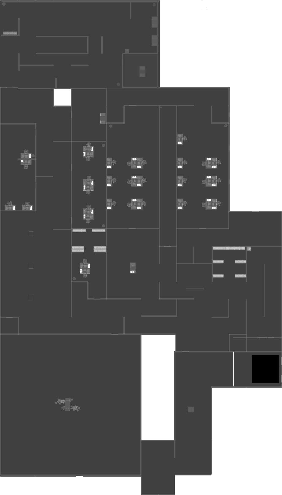

Level 4: Abandonded Office
Information
The Abandoned Office is a dimly lit environment with flickering lights and peeling wallpaper on the walls. The floor is composed of an old-fashioned white concrete that gives it a dated and worn appearance. The setting bears a strong resemblance to a very old and eerie office, and is even darker than the previous three levels. It is filled with cubicles, desks, and various office supplies, creating a maze-like atmosphere that can be disorienting and difficult to navigate.
WalkThrough
-
Begin by heading to the power box and locate the fuse slots. Use your fuses you found in the Dark Rooms to activate the power, allowing lighting and computer access in the Abandoned Office.
-
Proceed to the party room and engage in the following challenges:
-
Balloon-Popping Challenge: Pop balloons within the designated time limit.
-
Maze Challenge: Navigate through a maze and collect three sets of presents while avoiding the Partygoer.
-
Invisible Maze Challenge: Traverse a maze using the red lines on the ground and blow out three sets of candles within the designated time limit. This will spawn a red key card on the central table.
-
Collect the red key card and make your way towards the red door.
-
After you exited the party room, follow the steps for the ending you want below (except for chase ending, you can follow those steps as these ones are not necessary).
Sewer Ending
-
Find the door with a button that leads to the area after the Dark Rooms.
-
Locate the garage door and identify the pressure plate that opens it. Step on the pressure plate to activate it and quickly move under the garage door before it closes.
-
Inside the Parking, use the red key card to unlock the red door leading to the Sewerage.
Escaped & Chase Ending
-
Find the safe room and observe the arrows on the walls. Note down the numbers displayed in the order indicated by the arrows. Approach the safe and input the code in the lock using a specific technique: Move the mouse from the first number to the next number in the opposite direction. Repeat this process until the entire code is entered correctly, then press unlock. Open the safe to acquire a Motion Tracker and an Abecedary Codex.
-
Examine each PC screen for symbols and their corresponding colors. Utilize the Abecedary Codex to determine the letters represented by the symbols, noting them down with their respective colors. Input the letters in the order provided by the colored sticky notes on the main PC. Use the in-game keyboard to input the password and unlock a blue door.
-
Look for a red lighted room and remember the symbol displayed on the table, this will be used later.
-
Return to the power box and deactivate the power, and locate the blue door that was unlocked earlier and enter it to reach the Pool Rooms.
Fun Ending
-
Re-enter the party room through the red door. The invisible maze will have disappeared, and a door will have appeared at the end of the room. Proceed through the door to access the Fun Level.